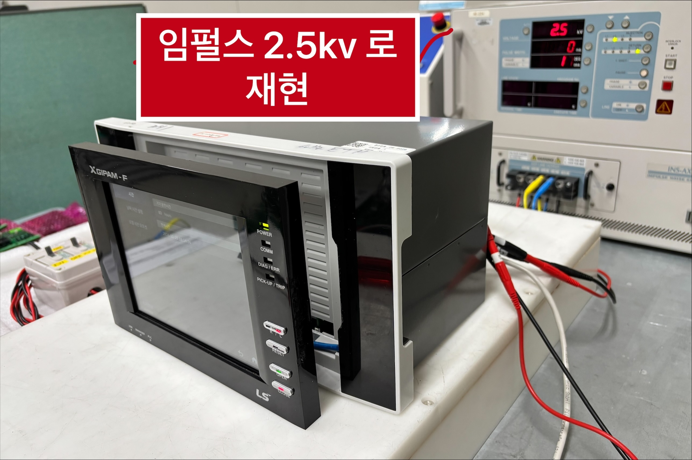
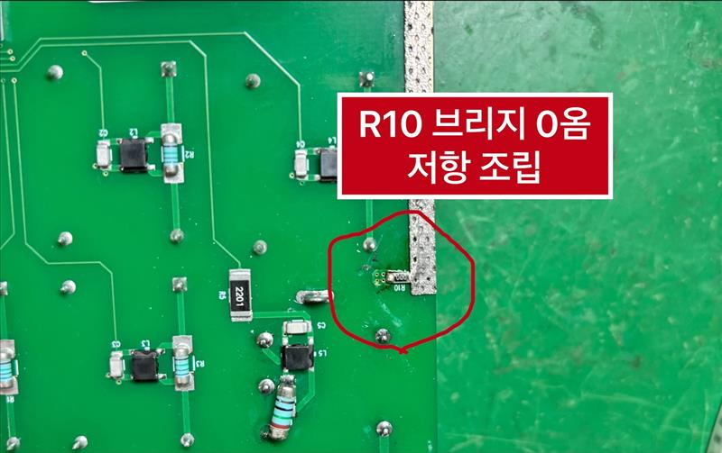
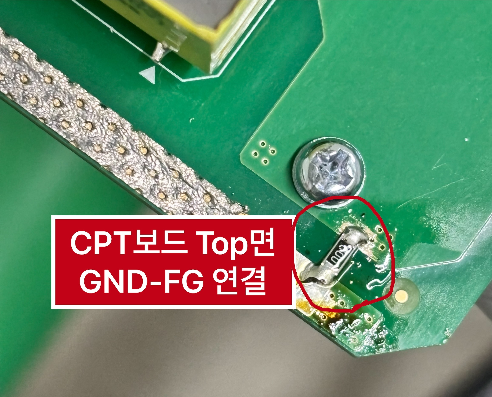

XGIPAM 임펄스내성 시험 ±2kv 10분인가 시 HMI-주처리간 통신단절 후 Service facility 안내창 팝업 디버깅
| New XGIPAM 확장모듈 3종 개발 | |
| DVEMC문제해결시스템 |
이슈 :
임펄스 2kv, 10분, ZCT 교체후 I0 포인트 인가 시 service facility 팝업 이후 여타 조작 불능
현상
{kind=link}
{kind=link}
{kind=link}
1. 임펄스 노이즈 내성 디버깅 활동이력
| 구분 | 주요 모듈 구성 (전기적) | 기구 및 기타 변경 사항 (물리적) | 테스트 결과 | ||
| 시료구성 #1 | 임펄스 ±2kv, 10분, CTP보드 I0 에 인가시 L1-L2 간 facility service 팝업. | • 이더넷 불능 Comm모듈 (가짜 옴론커넥터) • DSP 모듈변경 (ZCT 변경) • 나머지 모듈 모두 기존 60Hz EMC 시료 조립 | • 내함 나사머리 돌출 조립 (그라운딩강화) • Comm 모듈과 랩탑간 통신안되는 버전 | OK | |
| 시료구성 #2 | • 주처리(Main) 모듈 교체 • DSP 모듈변경 (ZCT 변경) • 나머지 모듈 모두 기존 60Hz EMC 시료 조립(RE 조치된 Comm 모듈 사용) | • 외함 안쪽 도장 제거 (Conductive) • PCB FG 가이드 재부착 | Unstable (1차: OK / 2차: Fail) | ||
| 시료구성 #3 | • DSP 모듈변경 (ZCT 변경) • 나머지 모듈 모두 기존 60Hz EMC 시료 원복(RE 조치된 Comm 모듈 포함) | • 베이스-HMI 간 랜선/전원선 Ferrite Core 추가 | FAIL | ||
| 시료구성 #4 | • 시료구성 #3과 동일 (DSP모듈 ZCT 변경 + 나머지 모듈 모두 기존 60Hz EMC 시료로 모두 원복(RE 조치된 Comm 모듈 포함) | • Comm모듈과 랩탑간 LAN 케이블 분리 (Open) • 전원선 Ferrite Core 유지 | 1차 /2차 : OK | ||
| 제목 없음 | • Comm모듈과 랩탑간 LAN 케이블 연결. But Ping 은 중지. | 1차 /2차 : OK | |||
| 시료구성 #5 | • 시료구성 #3 조건 下, • R10 과 R9 를 추가하여 DGND-FG간 브릿지 구성. (위에 2개, 아래2개,• R10 과 R9 측 FG에 쿠션패드 적용 | • Ferrite core 도 원복 (ZCAT173) | • I0, 2kv 10분 임펄스내성시험 통과 |  | |
| 시료구성 #6 | ✅이후부터는 임펄스 전압을 2.2kv 로 상향하여 시험. I0 단 임펄스시험은 통과하였으나 CT 일괄시험 Fail. service facility 팝업은 사라졌고 의도대로 재부팅됨. | • 시료구성 #3 조건 下, • 통신모듈은 신규제작된 (OSC출력에 병렬 CAP 10pF 달린) 장착 • R7, R8 , R9 제거 • R10만 남김 (1점 접지) | • CT A 상 시험 Pass (26.02.23) • CT A,B,C 상 시험 Pass • ZCT I0 시험 Pass |  | |
| 시료구성 #7 | • I0 와 CT 일괄 임펄스내성은 Pass 하였으나 • PT일괄시험 재부팅발생 | Q: 주처리-hmI간 이더넷라인이, 내함접지판으로 부터 방사파 간섭을 받는가 ? ⇒HMI 를 본체로부터 분리하여 앞으로 이격. | HMI 를 GIPAM 본체로부터 이격하였으나 고장증상개선없음 |  | |
| 시료구성 #8 | HMI-주처리간 ferrite 고주파대역 core 삽입 | 효과없음 | |||
| 제목 없음 | 제품하부 접지용 핑거 3개 삽입 | 효과없음 | |||
| 제목 없음 | 제품과 임펄스기기간 노후접지선 수선 | 효과없음 | |||
| 시료구성 #9 | 시료구성 #6 (보드하부 Bottom 면에 R10 저항만 남기고 모든 브리지 0Ω 저항제거)+ 보드상부 Top 면에 커퍼를 긁어서 0Ω 한개 연결 | CT 일괄 Pass PT 일괄 Pass |   | ||
| 시료구성 #10 | • ZCT L1-PE간 -2.2kv fail. • CT일괄 L1-L2간 -2.2kv fail | [3kv 로 올려서 재현 및 조치 유효성 검증] • CPT 보드 DGND-FG 간 브리지 0Ω 저항을 전부 Top 면으로 이동. (via 임피던스 회피) | 1. CT일괄 ±3kv, L1-PE/L2-PE/L1-L2 통과 2. ZCT ±3kv, L1-PE/L2-PE/L1-L2 통과 3. PT 일괄 ±3kv, L1-PE/L2-PE/L1-L2 통과 4. 제어전원 L1-PE/L2-PE/L1-L2/L2-L1 ±2kv 10분, 3kv 1분시험 통과 5. DI / DO 6. 아나로그회로 7. 통신회로 |    |
{kind=link}
{kind=link}
{kind=link}
2. 시험자 인터뷰 (Failure Mode 분석)
테스트 진행 시 관측된 구체적인 실패 양상. 시간 경과(열적 요인 또는 전하 축적)가 주요 변수.
- Short-term (1분): ±3kV 강도에서도 OK (내성 있음)
- Long-term (10분): 10분 ±2kV 강도에서 문제 발생
- 특이사항: I0 (누설전류 등) 측정, 8가지 결선의 impulse 시험에서 멈추거나 오동작하는 경향 확인
3. 차후 디버깅 Action Plan
최우선적으로 해 볼것
- Comm 모듈과 랩탑간 연결 Lan 선에 Ferrite core,
Laird 사 28A0593-0A2삽입
- Comm 모듈 PCB 외곽
ㄷ자형태 FG패턴→-자 형태로 변경하여 재시험
- 노이즈 유입 경로 차단 및 원인 부품 격리를 위한 단계별 실행 계획.
A. 하드웨어 교체 (Swapping)
- HMI 교체 : HMI 자체 내성 확인
- HMI 랜선 교체 : 케이블 쉴딩 및 임피던스 이슈 확인
B. 회로 및 부품 원복 (Revert)
3. DSP 모듈 원복 : ZCT 변경 전 상태로 되돌려 비교
4. 통신모듈 OSC Shunt Cap 원복 : 클럭 라인(3개 출력단) 노이즈 필터링 영향 확인
C. 접지 및 차폐 강화 (Grounding & Shielding)
5. HMI 접지 연결 : HMI 섀시 그라운드 강화
6. EMI 차폐 : 노이즈 방사/유입 차단을 위한 추가 차폐재 적용
D. SW 로는 방비가 안될까 ? →
4. 유효성 검증완료 대책 (시료구성 #5)
- CPT 보드의 I0 를 통해서 들어오는 노이즈가 FG 로 빠져나가는 대신 보다 임피던스가 작은 보드 GND 로 타고 들어옴.
- 따라서 아래처럼 노이즈가 FG 로 바로 빠져나갈수 있는 통로를 제공

- 3kv 에서도 문제없음
확인방법
기기정보 → 시각정보 에서 초가 잘 가는지 확인 (주처리와 HMI 간 통신이 잘 되고있다는 증거)
5. (시료구성 #6) 26년2월23일, CT A 상 임펄스내성 2kv 10분 시험에서 Fail (재부팅 복구현상)디버깅
기존 R7, R8 을 제거하고 R10 만 남김. R9 도 제거하여 보드를 가로지르는 공진성 노이즈 차단하고 R10 을 통해서만 노이즈가 배출되도록 일점접지 함.


임펄스 2.2kv 10분 시험, ZCT 와 CT 는 Pass 했으나 PT 시험중 재부팅발생. 아래부터 디버깅 이력.
빠른 재현을 위해 시험전압을 2.2kv → 2.5kv 로 상향
6. (시료구성 #7) HMI 를 본체로 부터 이격
가설 : 주처리와 HMI 간 Lan선에 유기되는 방사파가 범인인가 ? 그렇다면 HMI 를 본체로 부터 물리적으로 이격시켜 Lan 선의 내함 알미늄샤시에 대한 접촉도룰 줄이면 증상이 호전 될 것이나 ⇒ [결과] 효과없음. 따라서 방사노이즈는 원인아님.
7. (시료구성 #8) 시료와 임펄스장비간 접지선 수선, Finger 내함 하부에 3EA 추가


L2-PE 간 -2.2kv 10분 시험후 휴지기간 중
8. (시료구성 #9) CT 와 ZCT 전도노이즈 Sink 용 R10 만 연결 + PT 전도노이즈 Sink 용 Top 면에 패드 만들어서 0Ω 저항추가


유효성 검증결과-조치효과 양호
CT 일괄시험
- L1-PE, L2-PE, L1-L2, 모두 ±2.5kv 에서 동작 양호🤔
- L1-L2 때, 600초 (10분) 부터 1초씩 카운트다운하다가 570즘 되면 약 3초 마다 한 번씩 초를 건너뜀
- 그러나 470 초 즘 되면 빼먹는거 없이 다시 시간이 카운트다운 잘 됨
PT 일괄시험
- L1-PE, L2-PE, L1-L2, 모두 ±2.5kv 에서 동작 양호🤔
- L1-L2 때, 600초 (10분) 부터 1초씩 카운트다운하다가 570즘 되면 약 3초 마다 한 번씩 초를 건너뜀
- 그러나 470 초 즘 되면 빼먹는거 없이 다시 시간이 카운트다운 잘 됨
9. (시료구성 #10)
[3kv 로 올려서 재현 및 조치 유효성 검증]
• CPT 보드 DGND-FG 간 브리지 0Ω저항을 전부 Top 면으로 이동. (via 임피던스 회피)